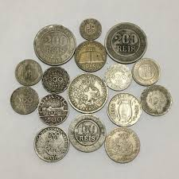

História da Numismática
A prática remonta à Antiguidade, quando moedas começaram a ser produzidas, por volta do século VII a.C. na Lídia (atual Turquia). Desde então, moedas e outros itens monetários têm servido não apenas como meios de troca, mas também como documentos históricos que registram governantes, eventos e ideologias.
A numismática moderna começou a se consolidar como uma área de estudo no Renascimento, quando intelectuais europeus passaram a colecionar moedas antigas para estudar o passado. Esse interesse cresceu com o tempo, levando à criação de sociedades numismáticas e museus dedicados ao tema.
